地政学
ムンバイはアラビア海に面し、中東、東アフリカ、欧州航路とインド内陸を結ぶ玄関である。港湾、海軍、証券市場、移民の流れが重なり、金融都市であると同時に海上安全保障の前線にもなる。資源輸送と外交の空気も近い。
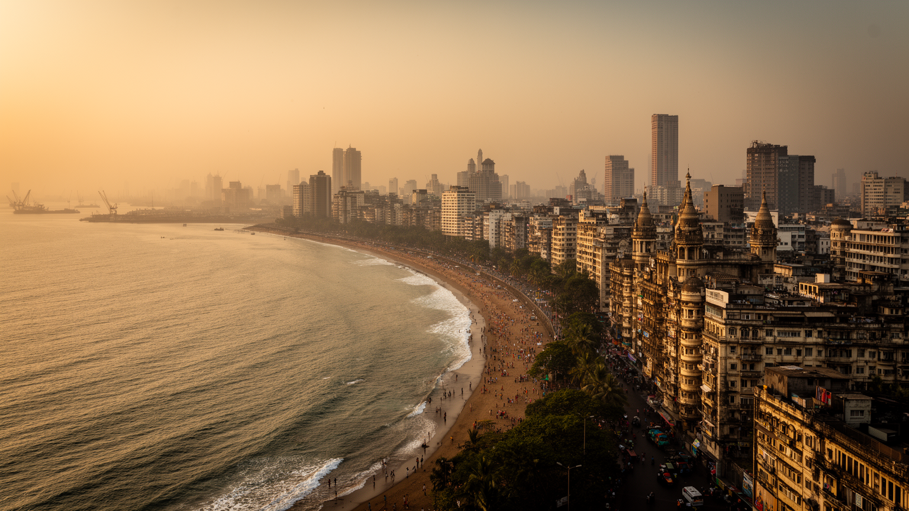
🇮🇳 インド / アジア / World City Atlas
アラビア海に突き出した島々の都市。金融、映画、港湾、移民労働、宗教儀礼、スラム、海岸の遊歩道が、インドの成長と不平等を同じ潮風の中に置く。
都市の骨格
ムンバイは港、証券取引、映画産業、通勤鉄道、湿地、埋立地、宗教祭礼、露店と高層住宅を抱え、インド洋世界と国内移民の流れを結ぶ。
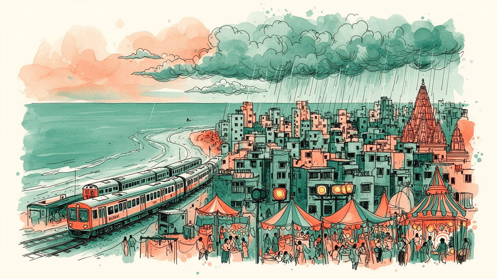
ムンバイはアラビア海に面し、中東、東アフリカ、欧州航路とインド内陸を結ぶ玄関である。港湾、海軍、証券市場、移民の流れが重なり、金融都市であると同時に海上安全保障の前線にもなる。資源輸送と外交の空気も近い。
金融、映画、港湾、繊維の記憶、IT、医療、飲食、建設が都市を動かす。高層オフィスと非公式労働は近く、通勤鉄道、露店、家内作業、配送、清掃が成長の基盤を支える。移民の技能と低賃金も街を形作り、雇用格差も残る。
マラーティー、グジャラーティー、ヒンディー、英語、イスラム、ヒンドゥー、パールシー、カトリックの記憶が混じる。映画、祭礼、寺院、モスク、教会、食文化が多層的な都市の声を作る。祈りと娯楽が路地で交差する。
海岸散歩、門、駅、市場、映画館、屋台、世界遺産の建築は旅を引きつけるが、住民には家賃、洪水、長距離通勤、衛生、再開発が迫る。観光と生活の近さが街の熱を生む。夕暮れの海辺も日常の余白になり、混雑も課題。
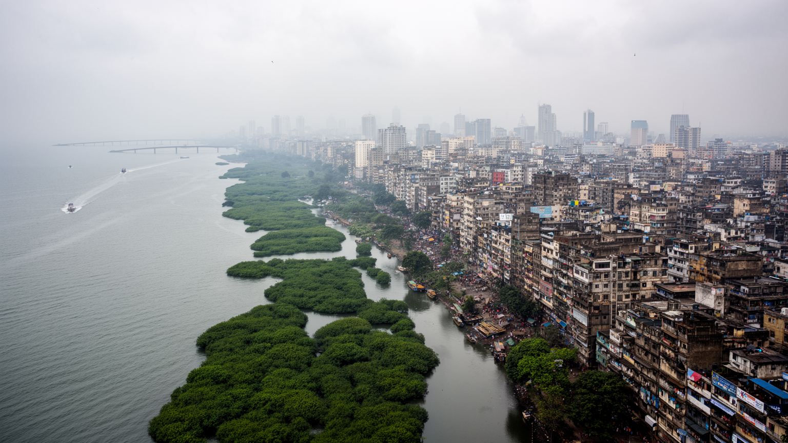
ムンバイは一つの平らな大都市ではなく、島々の結合、埋立地、湾、湿地、半島の狭い地形から成り立つ。南端の歴史的な港町から北へ延びる鉄道軸に沿って、業務地、住宅地、工場跡、スラム、映画スタジオ、空港、郊外の新都市が連続する。海は景観の背景である前に、都市の成立条件であり、植民地時代の港湾、綿花輸出、移民、金融、海軍、石油関連の流れを束ねてきた。狭い土地に人口と雇用が集中するため、駅から遠い場所、低地、湿地沿い、埋立地では洪水や交通不便が生活を左右する。湾岸の高層住宅や遊歩道は開放感を与えるが、その近くに漁村、非公式な住宅、排水路、マングローブも残る。ムンバイを読むには、海岸線の美しさだけでなく、土地を増やし、水を逃がし、通勤者を運ぶ仕組みを見る必要がある。地形の制約は不動産価格を押し上げ、再開発と立ち退きの圧力を強める。海へ開く都市であることは、富を呼び込む力であると同時に、高潮、豪雨、湿地喪失に弱い都市であることも意味する。南北に細長い形は、中心から周縁へ向かう移動を長くし、職場に近い土地ほど価値を高める。水辺を埋める開発は短期的な利益を生むが、自然の排水と漁業の場を削り、将来の災害費用を増やす。都市の骨格は、海を利用する技術と、海から受けるリスクの両方でできている。この緊張が街を方向づける。
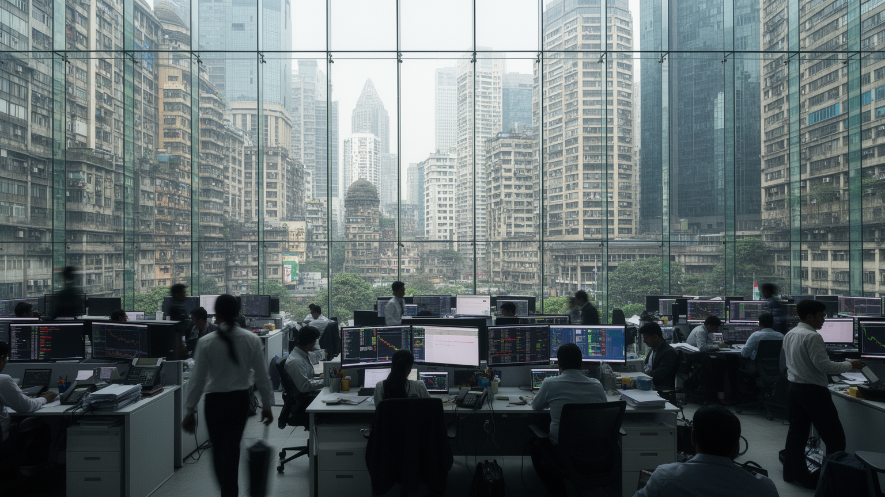
ムンバイはインドの金融を象徴する都市であり、証券取引所、銀行、保険、中央銀行機能、法律、監査、広告、メディア、企業本社が高密度に集まる。デリーが政治の首都なら、ムンバイは資本市場の感情がもっとも早く街に現れる場所である。株価、通貨、映画興行、港湾物流、不動産価格は、国の成長期待と不安を日々の会話に引き寄せる。だが金融都市の姿は、ガラスの高層ビルだけではない。通勤電車で長距離を移動する事務職、銀行の窓口、保険代理店、露店の決済、送金を頼りに暮らす移民家族、建設現場で働く人びとが都市経済を支える。資本の流れは速いが、住む場所を確保する速度は遅く、オフィスの近くに住める人は限られる。金融の集中は、専門職の雇用と税収を生む一方、不動産投機、再開発、家賃上昇を通じて日常生活を圧迫する。ムンバイの経済力を理解するには、世界市場へ接続する取引の画面と、朝の駅で押し合う通勤者の身体を同時に見る必要がある。金融はまた、社会的な上昇の物語を作る。地方から来た若者は会計、営業、情報技術、コールセンター、配達で入口を探し、家族への送金や教育費を支える。都市の利益が広く分配されるかどうかは、雇用の質、住宅、公共交通、金融包摂によって決まる。投資の期待と生活費の上昇が同じ街路で交差し、成功の実感をより複雑にする。
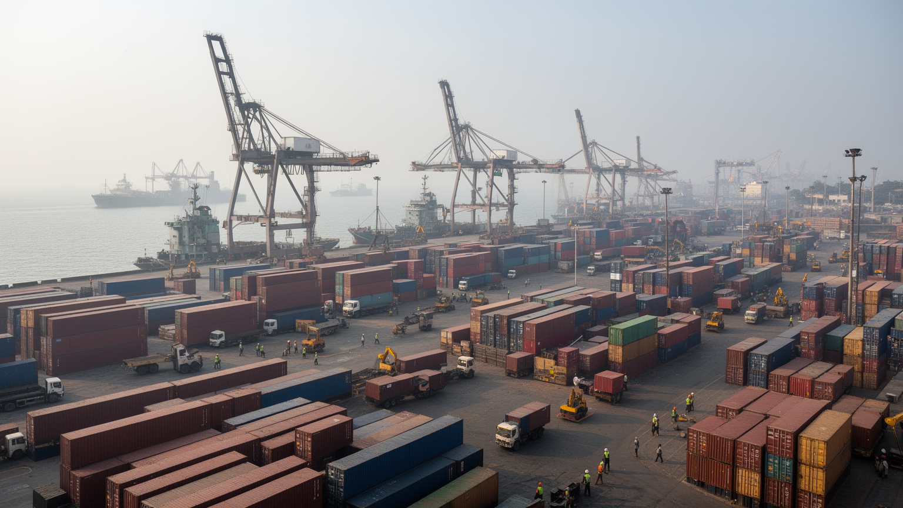
港はムンバイの古い心臓である。アラビア海に面した深い入り江は、植民地期に綿花、アヘン、繊維、移民、軍事、行政を結び、独立後も石油、機械、食料、コンテナ、沿岸輸送を通じて都市の外部接続を支えた。現在の物流はナビムンバイ側の港湾や高速道路、倉庫、空港貨物と連携し、旧市街の港湾空間だけでは完結しない。港湾労働者、トラック運転手、倉庫作業員、税関、船員、漁業者、修理工場、食品市場は、金融や映画ほど目立たないが、都市の食と産業を止めない基盤である。港は富を生んだ一方で、海沿いの土地利用をめぐる争いも生む。倉庫や埠頭を再開発すれば、景観と収益は変わるが、働く場所や漁村の生活は押し出されやすい。海上貿易は国際情勢にも左右され、燃料価格、中東情勢、保険、海賊対策、気候リスクが物流費に跳ね返る。ムンバイの港を読むことは、世界経済が都市の食卓、建設現場、雇用にどう届くかを読むことである。港の周辺には、古い倉庫街、労働組合の記憶、修理工場、魚市場、海軍施設が重なり、都市の安全保障と生活経済が接している。コンテナ化が進むほど港の仕事は見えにくくなるが、物が届く速度と価格は市民の暮らしを直接変える。港は過去の遺産ではなく、今日の都市を動かす静かな機械である。倉庫の移転や港湾再編も、地域の雇用と記憶を今も揺らす。
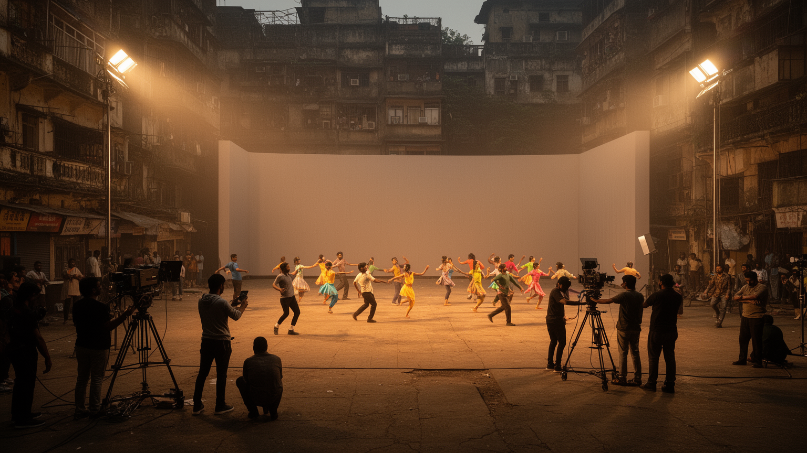
ムンバイはボリウッドと呼ばれるヒンディー映画産業の中心として知られるが、映画都市の実態はスターの輝きだけではない。スタジオ、脚本家、振付師、作曲家、照明、衣装、メイク、編集、配給、宣伝、劇場、ストリーミング、ファンクラブが複雑な労働の網を作る。映画はインド各地から来た人びとに夢を与え、言語、音楽、ファッション、恋愛観、家族像を全国へ送り出してきた。同時に、成功できる人は少なく、制作現場には不安定な契約、長時間労働、ジェンダー格差、外見への圧力、縁故の問題もある。ムンバイの街路、駅、海岸、古い建物、スラム、高層ビルは映画の背景になり、映画は都市のイメージを作り返す。観光客は撮影地やスターの家を見に来るが、映画産業は日々の食堂、運転手、宿泊、印刷、警備、ダンサー、エキストラの仕事にも支えられる。ムンバイを文化都市として読むには、画面に映る華やかさと、その外側で動く無数の労働を合わせて見る必要がある。映画は逃避であると同時に、都市の欲望と矛盾を映す鏡でもある。配信時代には、映画館だけでなく小さな制作会社、編集室、音楽スタジオ、携帯画面が新しい観客を作る。地域語映画や独立作品も都市の多声性を広げ、商業的な大作だけでは語れない労働者、女性、移民の経験を映し始めている。夢を売る産業は、夢を作る人の生活条件を問う産業でもある。
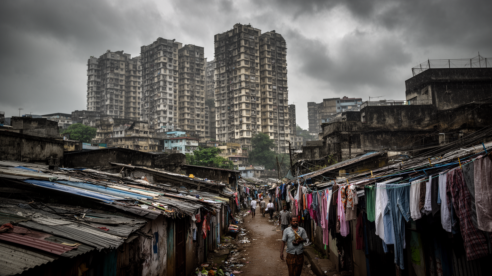
ムンバイの住宅問題は、都市の成功と矛盾を最も鋭く示す。限られた土地に金融、映画、港湾、行政、サービス業が集中し、住まいの需要は常に供給を上回る。高層マンションと高級住宅が海岸や再開発地に立つ一方、ダラヴィのような大規模な非公式居住地、老朽化したチョール、鉄道沿いの住居、低地の密集地が多くの労働者を受け止める。スラムは単なる貧困の象徴ではなく、皮革、陶器、食品、リサイクル、縫製、家内工業、サービス労働が集まる生産の場所でもある。そこには共同体、学校、宗教施設、商店、工房があり、住民は都市経済に深く組み込まれている。だが水道、衛生、火災、洪水、権利の不安定さ、立ち退きの圧力は大きい。再開発は安全な住宅を約束することもあるが、職場との近さ、家賃、商売の場、近隣関係を失わせる危険もある。ムンバイの不平等を読むには、貧しい地域を外から眺めるのではなく、都市がその労働に依存しながら土地の価値をめぐって住民を追い詰める仕組みを見る必要がある。住宅は家族の安全だけでなく、仕事の場所、信用、学校、宗教、医療への接続でもある。遠くへ移れば部屋は少し広くなるかもしれないが、通勤費と時間が増え、仕事を失う危険も高まる。都市の公正さは、低所得者が中心に近い場所で尊厳を持って暮らせるかで測られる。この近さが政治問題になる。
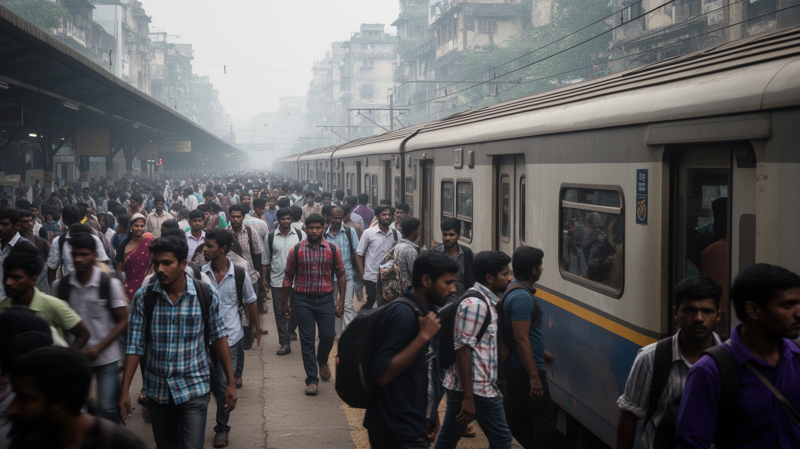
ムンバイの生活は郊外鉄道なしには成り立たない。南北に長い都市の形に沿って、複数の鉄道路線が職場、学校、市場、港、空港、郊外住宅地を結び、毎日膨大な通勤者を運ぶ。朝夕の混雑は都市の象徴であり、時間通りに仕事へ向かうための生命線であると同時に、事故、疲労、混雑、ジェンダー安全の問題を抱える。駅前には露店、バス、オートリキシャ、タクシー、歩道橋、屋台、宗教施設、広告が集まり、駅は移動の装置であるだけでなく生活の市場になる。通勤時間が長いほど、家族との時間、睡眠、食事、学習、介護は削られる。鉄道の混雑を補うためにメトロ、高速道路、海上橋、郊外開発が進むが、新しいインフラは必ずしも低所得者の移動を楽にするとは限らない。運賃、駅までの距離、乗換の安全、雨季の運休が生活条件を分けるからである。ムンバイの鉄道を読むことは、都市がどれほど多くの人の移動する身体に依存しているかを読むことだ。金融街の数字も映画の撮影も、市場の朝も、この通勤の流れに乗って始まる。女性専用車両、駅の照明、歩道の幅、改札前の混雑管理は、移動の公平性を左右する。雨季に線路が止まれば、日給の労働者は収入を失い、学生や患者も予定を変えざるを得ない。交通政策は単なる速度の問題ではなく、都市に参加できる人の範囲を決める制度である。改善は急務だ。
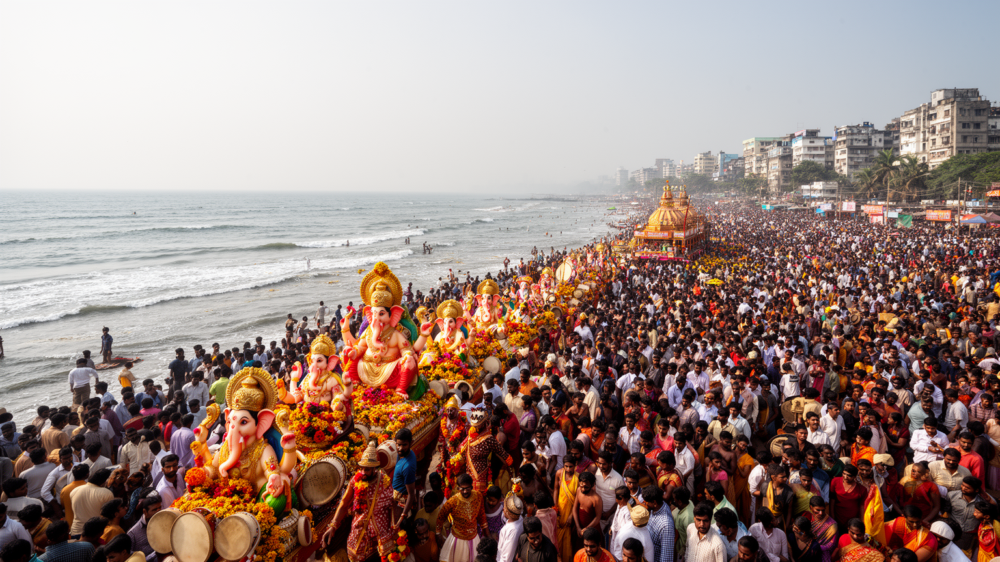
ムンバイの宗教生活は、多宗教都市の緊張と豊かさを同時に示す。ヒンドゥー寺院、イスラムのモスク、カトリック教会、パールシーの記憶、ジャイナ教の商人文化、シク教の施設が、商業地、住宅地、港町の近くに並ぶ。ガネーシュ祭では巨大な像が街を進み、海へ向かう行列が都市全体を儀礼の舞台に変える。ムハッラム、イード、クリスマス、地域の守護神の祭り、家族の法事、結婚式も、交通、音、食、服装、休日のリズムに影響する。宗教は個人の信仰だけでなく、移民が故郷とのつながりを保ち、職場や近隣で助け合う社会的な仕組みでもある。一方で、宗派間の緊張や政治動員、暴力の記憶も都市から消えていない。礼拝の音、祭礼の混雑、道路使用、警備、環境負荷をめぐって、信仰と公共空間の調整が必要になる。ムンバイを読むには、宗教を観光的な色彩として見るだけでなく、住民が祈り、働き、互いの違いを調整しながら都市を共有する方法として見る必要がある。祭礼は露店商、花売り、音響、職人、交通警備にも仕事を生み、地域経済を動かす。海へ像を送る儀礼は共同体の誇りである一方、水質や混雑の問題も伴う。宗教の力は、都市を分けることも結び直すこともできるため、日常の寛容と制度的な調整が欠かせない。祭りの準備と後片付けにも、多くの無名の労働と自治の工夫がある。
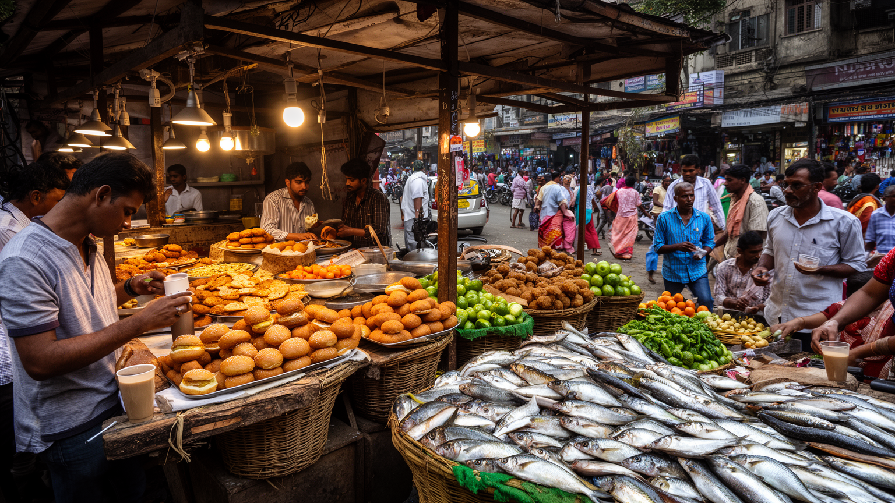
ムンバイの食は、移民都市の記憶を最も身近に味わわせる。ヴァダパヴ、パヴバジ、ベルプリ、ケバブ、ビリヤニ、南インド料理、グジャラーティーの軽食、パールシー料理、シーフード、チャイ、甘味は、地域、宗教、階層、労働時間を映す。駅前の屋台は通勤者の朝食と夜食を支え、オフィス街の弁当配達は都市の時間管理を象徴する。市場では魚、香辛料、野菜、花、布、宝飾、日用品が混じり、価格交渉、信用、家族経営、配送のネットワークが働く。高級レストランやカフェも増えているが、ムンバイの食文化の厚みは、歩道の小さな店、家庭の台所、職場へ届く弁当、宗教行事の食事にある。衛生、雨季の浸水、露店規制、家賃上昇は商いを不安定にする一方、屋台は低価格で都市労働者を支える重要なインフラでもある。食を読むことは、味の多様さだけでなく、誰が早朝に仕込み、誰が運び、誰が安く食べられる場所を守っているかを見ることである。ムンバイの市場は、都市の胃袋であると同時に、移民が仕事と居場所を探す入口でもある。弁当配達の仕組みは、家庭の料理、鉄道、職場の昼休みを細かくつなぎ、巨大都市の時間を整える。路上の食は手軽だが、規制や排除の対象にもなりやすい。食文化を守ることは、安い食事と小さな商いを都市の正当な機能として認めることでもある。その支えは脆い。
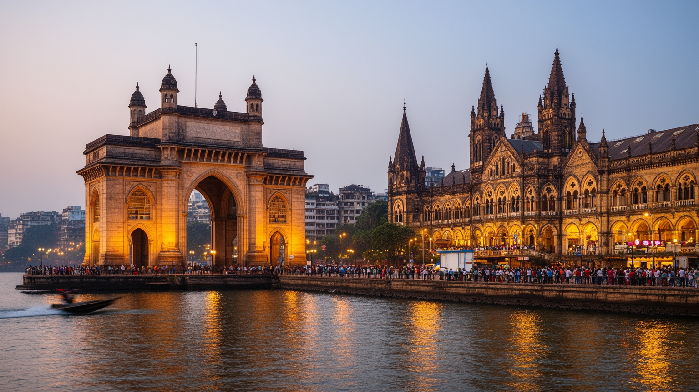
ムンバイ観光は、インド門、チャトラパティ・シヴァージー・ターミナス、コラバ、マリン・ドライブ、エレファンタ石窟、クロフォード市場、映画の撮影地、屋台の味を結ぶ。ゴシック、ヴィクトリア朝、アールデコの建築は、植民地支配、貿易、鉄道、金融、都市計画の記憶を物語るが、単なる美しい背景ではない。駅は今も通勤者で混み合い、市場は生活物資を売り、海岸の遊歩道は若者、家族、労働者、観光客が同じ夕風を共有する場所である。観光地としての魅力は、新旧の建物と海の開放感、映画都市らしい華やかさ、食の多様性にある。一方で、観光の視線はスラムを好奇心の対象にしやすく、貧困や労働を消費する危険もある。歴史地区の保存も、老朽建物の安全、住民の権利、商店の家賃と切り離せない。ムンバイを歩く旅では、名所を点で巡るだけでなく、港から鉄道、市場、宗教施設、海岸、住宅地へつながる都市の流れを見ることが重要である。観光は都市を外へ開くが、住民の日常を軽く扱わない視点が必要になる。世界遺産の駅を使う通勤者、海岸で休む家族、撮影地を探す旅行者は、同じ空間を別の目的で使う。混雑、警備、清掃、案内、価格上昇は観光の裏側で住民に返ってくる。旅の価値は、写真の美しさだけでなく、都市の歴史と現在の生活をどこまで一緒に見られるかで深まる。その態度だ。
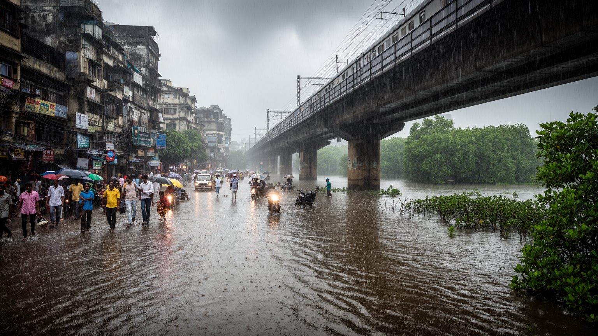
ムンバイの気候リスクは、雨季の豪雨、高潮、海面上昇、湿地の喪失、排水能力の不足が重なるところにある。モンスーンは水をもたらし、街を冷ます季節でもあるが、短時間の豪雨は道路、鉄道、空港、低地の住宅、スラム、地下施設を止める。川や排水路が詰まり、マングローブや湿地が埋め立てられると、水は逃げ場を失い、貧しい地域ほど被害を受けやすくなる。高層ビルのある地区でも、停電、エレベーター停止、交通遮断、医療アクセスの悪化は深刻である。気候変動は単に天気の問題ではなく、土地利用、住宅政策、廃棄物管理、公共交通、保険、健康格差の問題である。暑さと湿度は屋外労働者、露店商、通勤者、高齢者に負担をかけ、冷房を使える人と使えない人の差を広げる。ムンバイが海に開く都市である以上、海を埋め立てて成長するだけでは限界がある。水辺の緑地、排水路の維持、低所得者住宅の安全、早期警報、鉄道の耐水化を組み合わせなければ、都市の成長そのものが危険を増やす。雨季の道路にたまる水は、都市計画の結果を映す鏡である。気候対策は新しい堤防だけでは足りない。ごみ収集、排水路の清掃、湿地保全、避難情報、学校や病院の継続、労働者の休息場所まで含めて考える必要がある。水と暑さに弱い人を最初に守れるかが、都市の回復力を決める。備えは日常の課題だ。
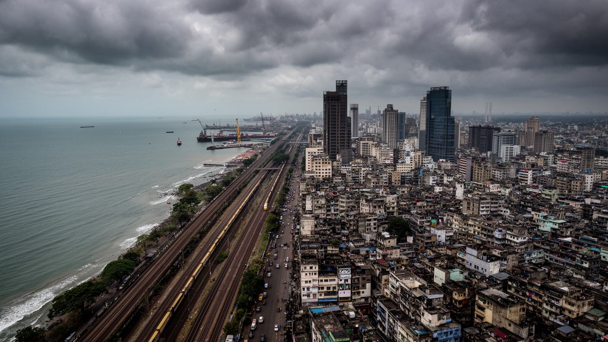
ムンバイは、インドの経済的な自信と都市社会の脆さを同時に凝縮する。証券取引所、映画スタジオ、港湾、海岸の高層住宅は、国内外の資本、才能、観光客を引き寄せる。一方で、スラム、長距離通勤、洪水、露店規制、宗派間緊張、住宅権、衛生、暑熱は、成長の負担が誰に集中しているかを問い続ける。都市の魅力は、矛盾を隠しているからではなく、異なる生活が極端に近い距離でぶつかり、交渉し、働き続けている点にある。朝の鉄道、港の倉庫、映画の撮影現場、寺院の祭礼、屋台の湯気、海岸の夕暮れ、金融街の画面は、別々の風景ではなく一つの都市の循環である。ムンバイを豊かな都市として見るだけでは、土地と移動の不平等を見落とす。貧困の都市として見るだけでは、住民が作る商い、文化、祈り、ユーモア、野心を見落とす。必要なのは、海に開いた金融都市、移民の労働都市、映画の夢を売る文化都市、気候リスクにさらされる生活都市を同じ地図で読む視点である。ムンバイの重要性は、インドの未来が数字だけでなく、誰が都市に住み続けられるかで決まることを示している点にある。都市を動かす力は、企業や映画スターだけでなく、通勤者、露店商、港湾労働者、家事労働者、職人、学生、宗教団体、漁業者にも分散している。彼らの時間と場所が守られなければ、ムンバイの成長は自分の基盤を削る。だからこの都市は、世界都市の野心と生活都市の権利を同時に問う場所である。